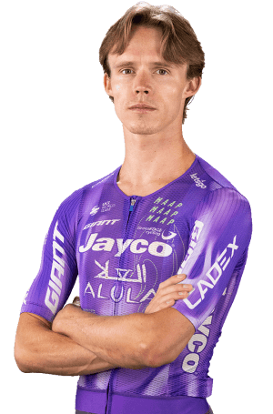

| Nombre del dato | Resultado |
|---|---|
| Equipo | Team Jayco AlUla |
| Carreras disputadas (con resultado en el top 25) | 8 |
| Victorias de etapa | 3 |
| Victorias en la clasificación general | 2 |
| Victorias totales | 5 |
| Mejor puesto en una gran vuelta | 13º |
| Mejor puesto en la clasificación general | 13º |